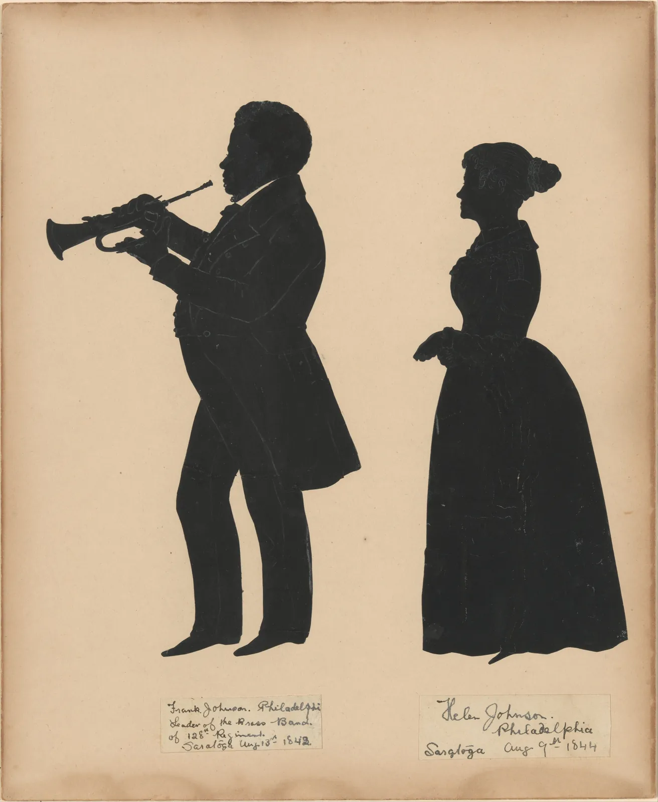
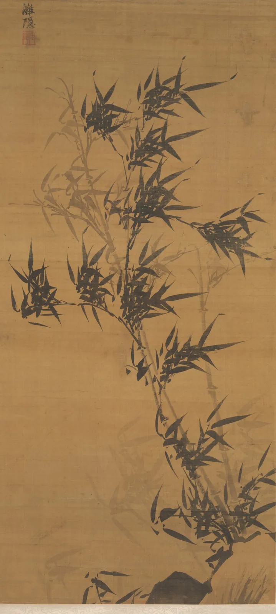

형과 바탕
겨울 저녁, 불 켜진 가게 앞을 지나간다고 하자. 창 안의 책 제목이나 소품의 색보다 먼저 눈에 들어오는 것은 밝은 창을 배경으로 선 덩어리의 윤곽이다. 어떤 진열은 몇 걸음 떨어져도 "트리 하나, 책 더미 둘"로 또렷이 읽히고, 어떤 진열은 검은 띠 하나로 뭉쳐 버린다. 두 진열의 차이는 놓인 물건이 아니라 물건 사이에 있다. 이 장은 그린 것(형)과 남은 것(바탕)이 함께 화면을 만든다는 사실을 끌고, 뒤집고, 오려 보며 확인한다.
- 형과 바탕, 양형과 음형을 구별하고, 물건을 옮길 때 음형이 어떻게 함께 바뀌는지 본다.
- 꽃병과 두 얼굴이 번갈아 보이는 반전 도형을 직접 고쳐 그리며 형–바탕이 뒤집히는 조건을 찾는다.
- 작음, 감싸임, 볼록함, 아래쪽, 익숙함 같은 단서가 어느 쪽을 형으로 고르게 하는지, 그 근거가 어느 수준인지 안다.
- 실루엣이 읽히는 조건(측면, 몸 밖으로 뻗은 돌출부, 빈틈)을 시뮬레이터와 19세기 실루엣 작품에서 찾는다.
- 노탄과 수묵화의 여백에서 흑과 백이 서로를 만드는 화면을 보고, 거리에서도 읽히는 빈 자리를 설계한다.
그린 것과 남은 것
종이에 컵 하나를 그리면 종이는 두 부분으로 나뉜다. 컵이 차지한 자리와 그 나머지다. 우리는 앞의 것을 "컵"이라고 부르고, 뒤의 것은 보통 이름조차 붙이지 않는다. 지각 심리학에서는 이 둘을 형(Figure)과 바탕(Ground)이라고 부른다. 형은 앞으로 나와 하나의 "물건"으로 읽히는 부분이고, 바탕은 형 뒤로 물러나 형 아래까지 이어져 있는 것처럼 보이는 부분이다.
미술 수업에서는 같은 구분을 모양의 말로 다시 한다. 물건 자체가 차지한 모양이 양형(Positive shape), 물건과 물건 사이, 물건과 화면 가장자리 사이에 남은 모양이 음형(Negative shape)이다. 음형은 "빈 곳"이 아니라 그 자체로 모양을 가진 면이다. 둘은 같은 경계선을 나눠 갖는다. 컵의 윤곽을 한 번 그으면 컵의 모양과 그 둘레 음형의 모양이 한꺼번에 정해진다.
화가들이 음형을 일부러 보는 이유는 단순하다. 물건의 이름을 아는 순간 머리는 "의자란 이렇게 생겼지" 하는 기호를 그리려 들고, 눈앞의 실제 각도와 비례를 놓친다. 음형에는 이름이 없다. 그래서 다리 사이의 빈 모양을 따라 그리면 보이는 그대로 그리게 된다. 미국의 미술 교육자 베티 에드워즈(Betty Edwards)가 『오른쪽 두뇌로 그림 그리기』(Drawing on the Right Side of the Brain, 1979)에서 이 연습을 널리 알렸다. 그 책이 내세운 좌뇌·우뇌 설명은 지금은 지나친 단순화로 여겨지지만, 음형을 그리는 연습 자체는 여전히 드로잉 수업의 기본이다.
음형은 그림을 그릴 때만이 아니라 놓을 때도 일한다. 아래 화면에 병, 컵, 귤이 있다. 물건을 끌어 옮기면서 오른쪽 "음형으로 보기"로 바꿔, 물건 사이에 남는 모양이 어떻게 생기고 사라지는지 본다.
음형 보기: 물건 사이에 남는 모양
물건을 하나 옮길 때마다 양형은 그대로인데 음형은 전부 바뀐다. 그러니 화면을 짜는 일은 물건을 놓는 일이면서 동시에 남는 자리를 깎는 일이다. 세 번째 실험의 "실오라기 틈"은 그림 수업에서 자주 듣는 경고와 이어진다. 두 윤곽이 겹칠 듯 말 듯 아슬아슬하게 닿는 자리를 영어권에서는 탄젠트(Tangent)라고 부르며 피하라고 가르친다. 닿은 것인지 떨어진 것인지, 어느 쪽이 앞인지 눈이 정하지 못해 그 자리에 시선이 걸리기 때문이다. 확실히 겹치거나 확실히 띄우면 형과 바탕의 관계가 분명해진다.
꽃병인가, 두 얼굴인가
형과 바탕을 처음으로 체계적으로 연구한 사람은 덴마크의 심리학자 에드가 루빈(Edgar Rubin)이다. 그는 1915년 덴마크어로 낸 박사 논문 『시각적으로 체험된 형』(Synsoplevede Figurer)에서, 같은 경계를 사이에 둔 두 영역이 어떻게 다르게 체험되는지를 정리했다. 요약하면 이렇다. 형은 물건 같은 성질을 띠고 앞에 있는 것처럼 보인다. 바탕은 모양이 덜 뚜렷하고 형의 뒤로 이어지는 것처럼 보인다. 그리고 둘 사이의 경계선은 형의 것으로 느껴진다. 곧 윤곽은 형의 모양을 그리지, 바탕의 모양을 그리지 않는다.
루빈이 이런 성질을 보여 주려고 쓴 도형 가운데 하나가 오늘날 "루빈의 꽃병"으로 알려진 그림이다. 가운데 꽃병으로 보다가, 어느 순간 마주 보는 두 옆얼굴로 뒤집힌다. 흥미로운 점은 둘을 동시에 형으로 보기가 몹시 어렵다는 것이다. 얼굴이 보일 때 꽃병 쪽은 그 뒤의 빈 공간으로 물러나고, 꽃병이 보일 때 얼굴 쪽은 벽이 된다. 이렇게 형과 바탕이 번갈아 바뀌는 그림을 반전 도형(Reversible figure)이라고 한다.
아래는 이 장에서 직접 그린 꽃병–얼굴 도형이다. 오른쪽 윤곽 위의 손잡이를 끌면 이마, 코, 입술, 턱의 모양이 바뀐다(왼쪽은 거울처럼 따라온다). 슬라이더로 꽃병 전체의 폭을 바꾸고, 눈이나 무늬를 넣어 어느 쪽이 형으로 굳는지 본다.
꽃병과 두 얼굴: 반전 도형 고쳐 그리기
반전은 두 해석이 거의 같은 힘으로 맞설 때만 일어난다. 넓이가 한쪽으로 크게 기울거나, 한쪽에만 눈·무늬 같은 단서가 붙으면 저울이 기울어 한 해석이 굳는다. 반대로 말하면, 형과 바탕은 그림 안에 고정된 성질이 아니라 보는 사람의 눈이 그때그때 내리는 결정이다. 그림을 그리는 사람은 그 결정을 원하는 쪽으로 기울이는 단서를 놓는다.
어느 쪽이 형이 되는가
반전 도형은 일부러 단서를 맞서게 만든 특수한 그림이다. 대부분의 화면에서는 어느 쪽이 형인지 망설임 없이 정해진다. 루빈 이후 많은 연구가 그 결정에 영향을 주는 성질을 찾아 왔다. 그림 2는 그 가운데 자주 언급되는 넷을 모은 것이다.
작고 감싸인 쪽이 형이 된다는 관찰은 루빈의 논문에 이미 있다. 볼록함은 이탈리아의 게슈탈트 심리학자 가에타노 카니자(Gaetano Kanizsa)와 발터 제르비노(Walter Gerbino)가 1976년에 흑백 줄무늬로 실험해 보고했다. 경계가 한쪽으로 부푼 줄무늬를 보여 주면, 사람들은 색과 상관없이 볼록한 띠를 형으로 고르는 경향이 컸다. 아래쪽 영역이 형으로 보이기 쉽다는 결과는 미국의 숀 베세라(Shaun P. Vecera)와 동료들이 2002년에 보고했다. 땅 위에 물체가 서 있는 장면을 수없이 보아 온 경험과 관련이 있으리라는 해석이 따른다.
아래 시뮬레이터에서 세 가지 배치를 바꿔 가며 단서를 하나씩 조절한다. "검은 쪽 넓이"로 크기를, "볼록함"으로 경계가 어느 쪽으로 부푸는지를 바꾸고, "색 뒤집기"로 흑백을 바꿔도 같은 쪽이 형으로 남는지 본다.
어느 쪽이 형이 되나: 크기·볼록함·자리
실루엣이 읽히는 조건
형과 바탕을 가장 극단까지 밀어붙인 그림이 실루엣(Silhouette)이다. 내부의 모든 세부를 지우고 한 가지 색으로 채운 윤곽만 남긴다. 실루엣이 무엇인지 알아볼 수 있다면, 그 형은 윤곽만으로 정보를 다 실어 나른다는 뜻이다. 거꾸로 실루엣으로 만들어 무엇인지 모르겠다면, 그 형은 내부의 선과 색에 기대어 겨우 읽히고 있었던 것이다.
18~19세기 유럽과 미국에서는 검은 종이를 오려 옆얼굴과 전신을 만드는 실루엣 초상이 크게 유행했다. 사진이 나오기 전, 값싸고 빠르게 닮은 모습을 남기는 방법이었다. 프랑스 출신의 오귀스트 에두아르(Auguste Edouart)는 영국과 미국을 돌며 가위 하나로 수천 명의 실루엣을 오렸고, 1835년에는 실루엣 초상에 관한 책(A Treatise on Silhouette Likenesses)을 내기도 했다.

에두아르의 실루엣에서 몇 가지 조건이 보인다. 하나, 옆모습이다. 정면 얼굴의 윤곽은 달걀형에 가까워 사람마다 큰 차이가 없지만, 옆얼굴의 윤곽에는 이마, 코, 입술, 턱이 차례로 드러난다. 둘, 몸 밖으로 뻗은 돌출부다. 나팔과 손이 몸의 윤곽 밖에 있어 실루엣에 남는다. 셋, 빈틈이다. 팔과 몸 사이, 사람과 사람 사이에 바탕이 비집고 들어가야 각 부분이 갈라져 보인다. 아래 시뮬레이터에서 직접 확인한다. 왼쪽은 선과 색으로 그린 그림, 오른쪽은 같은 자세의 실루엣이다. 손을 끌어 자세를 바꾸고 몸의 방향을 돌려 본다.
실루엣 점검: 손을 어디에 둘 것인가
선 그림에서는 몸 앞의 책도, 몸에 붙인 팔도 선과 색으로 다 보인다. 실루엣으로 바꾸는 순간 그 정보는 사라진다. 그런데 멀리서 보는 포스터, 역광의 사진, 저녁의 쇼윈도처럼 실제 세상의 많은 장면은 실루엣에 가깝게 보인다. 내부의 선은 거리와 조명에 쉽게 지워지지만 윤곽은 끝까지 남는다.
노탄: 흑과 백이 서로를 만든다
ColorBook 6장은 화면을 두세 가지 명도의 덩어리로 보는 노탄(Notan, 濃淡)을 명도의 눈으로 다뤘다. 미국의 미술 교육자 아서 웨슬리 다우(Arthur Wesley Dow)가 1899년 책 『구성』(Composition)에서 동아시아 그림과 판화의 명암 배치를 소개하며 쓴 말이다. 형과 바탕의 눈으로 보면 노탄에는 한 가지 뜻이 더 있다. 검은 덩어리의 모양이 정해지면 흰 덩어리의 모양도 함께 정해진다. 다우가 노탄에서 중요하게 본 것도 어두운 면과 밝은 면이 서로 맞물리는 배치, 곧 어느 한쪽이 "남은 자리"가 아니라 둘 다 모양을 가진 상태였다.
이 생각을 손으로 익히는 연습이 미국 미술 수업에서 흔히 하는 종이 노탄이다. 검은 정사각형의 가장자리에서 모양을 오려 내고, 오려 낸 조각을 그 가장자리를 축으로 바깥에 뒤집어 붙인다. 검은 종이는 한 조각도 버리지 않았으니 검은 넓이는 그대로인데, 안으로 파인 흰 모양과 밖으로 나간 검은 모양이 거울처럼 맞물린다. 아래에서 오려 낼 선을 끌어 직접 해 본다.
종이 노탄: 오려서 바깥으로 펼치기
경계 길이가 처음의 1.5배를 넘어도 검은 넓이는 그대로다. 흑과 백이 맞닿는 자리가 길어질수록 둘은 서로 깊이 물리고, 어느 쪽이 형이고 어느 쪽이 바탕인지 한 번에 정해지지 않는 긴장이 생긴다. 다음 절의 수묵화는 이 긴장을 다른 방식으로 다룬다. 바탕을 칠하지 않은 채로 형만큼 일하게 만든다.
비단이 남긴 자리: 수묵화의 형과 바탕
동아시아의 수묵화에서는 바탕을 칠하지 않는 것이 보통이다. 종이나 비단의 바탕색이 그대로 하늘이 되고, 물이 되고, 안개가 된다. 그렇다고 그 바탕이 "아무것도 아닌 곳"은 아니다. 청나라의 서예가이자 전각가 등석여(鄧石如)는 글씨의 성긴 곳과 빽빽한 곳을 말하며 흰 곳을 헤아려 검은 곳처럼 다루어야 한다고 했고, 포세신(包世臣)이 『예주쌍즙』(藝舟雙楫)에 이 말을 전했다. 흔히 "계백당흑(計白當黑)"으로 줄여 부른다. 획과 획 사이에 남는 흰 모양을 획만큼 신경 써서 짜라는 뜻으로, 이 장의 음형과 같은 생각이다.

이 그림을 노탄으로 바꿔 형과 바탕이 어떻게 나뉘는지 본다. 경계선을 좌우로 끌어 원본과 비교한다. "3단계"로 바꾸면 짙은 대나무와 옅은 대나무가 따로 갈린다. "형과 바탕 뒤집기"를 켜면 먹을 흰색으로, 비단을 검정으로 바꾼다.
「풍죽」의 형과 바탕 나누기
뒤집은 그림에서도 대나무가 읽힌다는 것은 이 그림의 형과 바탕이 윤곽의 모양으로 정해져 있다는 뜻이다. 날카로운 잎끝은 볼록한 형의 단서를 강하게 갖고 있어서, 색을 바꿔도 잎 쪽이 형으로 남는다. 동시에 원본이 더 가볍고 바람이 통하게 느껴지는 것은 넓은 바탕이 밝기 때문이다. 같은 형–바탕이라도 어느 쪽에 밝음을 주느냐가 화면의 무게를 바꾼다. 비운 자리가 화면 전체에서 어떤 일을 하는지는 10장에서 더 넓게 다룬다.
글자와 지면 속의 음형
음형을 가장 꼼꼼히 다루는 사람들 가운데 하나가 글꼴 디자이너다. "ㅁ", "ㅇ", "o", "e"처럼 획이 감싼 안쪽 공간을 속공간(Counter)이라고 부른다. 속공간이 너무 좁으면 작은 크기에서 글자가 까맣게 막히고, 너무 넓으면 글자가 헐거워 보인다. 글자 사이의 간격도 마찬가지다. 글자와 글자 사이에 남는 흰 면의 넓이가 비슷해 보이도록 맞추는데, 그래서 곧은 획끼리 마주한 "ㅣㅣ"는 멀리, 둥근 획끼리 마주한 "ㅇㅇ"는 더 가깝게 붙인다. 자로 잰 거리를 같게 하면 오히려 들쭉날쭉해 보인다.
지면 디자인에서도 같은 원리가 일한다. 포스터에 제목, 그림, 날짜를 놓으면 그 사이에 남는 흰 면들이 모양을 갖는다. 남은 면이 잘게 쪼개져 이름 붙일 수 없는 자투리가 되면 지면이 산만해 보이고, 크게 한두 덩어리로 모이면 정돈되어 보인다. 요소를 무리 짓는 간격의 규칙은 4장에서, 비운 면의 비율은 10장에서 이어서 본다.
규칙을 거꾸로 쓰는 경우도 있다. 판화가 M. C. 에셔(M. C. Escher)의 평면 분할 판화처럼, 새와 물고기가 서로의 바탕이 되도록 화면을 빈틈없이 채운 그림은 형–바탕의 결정을 일부러 끝없이 미룬다. 보는 사람은 한쪽을 형으로 보다가 다른 쪽으로 넘어가는 일을 즐긴다. 오래 들여다보는 그림이나 장식 무늬에서는 이 모호함이 즐거움이 되지만, 날짜와 장소를 한눈에 전해야 하는 안내 포스터에서는 같은 모호함이 정보를 가린다. 어느 쪽이 옳은지는 그 화면이 무엇을 전하려는가에 달려 있다.
거리에서 읽히는 진열
이제 모든 것을 한 장면에 모은다. 폭 2.4 m짜리 서점 쇼윈도에 트리, 이젤 위의 그림책, 랜턴, 책 더미 같은 물건 일곱 개가 있다. 가까이서는 모든 물건이 따로 보이지만, 길 건너에서 보면 작은 틈은 사라지고 큰 덩어리만 남는다. 몇 cm의 틈이 어디까지 보이는지는 그 틈이 눈에 만드는 각도, 곧 시각도(Visual angle)로 따진다.
사람의 시력은 1분(1/60°) 정도의 세부까지 가려낼 수 있지만, 지나가며 흘끗 보는 진열을 "덩어리"로 읽는 수준은 그보다 훨씬 거칠다. 이 책의 모델은 화가가 눈을 가늘게 뜨고 덩어리를 볼 때를 흉내 내어, 시각도 약 1°보다 좁은 틈은 메워져 덩어리로 뭉친다고 가정한다. 7 m에서 1°는 약 12 cm다. 이 값은 측정한 지각 한계가 아니라 교육용 기준이다. 저녁 거리에서 보는 모습으로 바꾸고, 물건을 끌어 읽히는 빈 자리를 만든다.
책방 E 겨울 쇼윈도: 거리에서 본 실루엣
"처음 진열"은 물건이 하나도 가려지지 않았는데도 거리에서는 덩어리 하나로 읽혔다. 물건 하나하나는 형이지만, 그 사이의 음형이 너무 가늘어 바탕 노릇을 하지 못했기 때문이다. "빈 자리 두 곳"은 물건 수가 같은데 두 덩어리로 갈리고, 홈 하나가 오른쪽 덩어리의 윤곽에 표정을 준다. 반대로 "흩어 놓기"는 틈이 넉넉한데도 덩어리가 너무 많아 무엇이 주인공인지 흐려진다. 빈 자리는 많을수록 좋은 것이 아니라, 읽히는 크기로, 셀 수 있는 수만큼 있을 때 일한다.
서윤의 겨울 작업 노트
길 건너에서 보니 진열이 검은 띠 하나였다
11월 마지막 주 저녁, 서윤은 1장의 두 단 진열 앞에 트리와 이젤 위의 그림책, 랜턴, 책 더미를 들여 겨울 진열을 꾸민 뒤 길 건너 보도로 건너갔다. 창에서 약 7 m 떨어진 자리다. 가게 안의 전구색 조명이 뒷벽을 밝히자 창 안의 물건들이 검은 실루엣이 되었는데, 트리부터 낮은 책 더미까지 키 순서로 이어진 검은 계단 하나로 보였다. 물건 사이의 틈은 1 cm 남짓이었다. 이 책의 모델로 계산하면 7 m에서 메워지는 틈의 한계는 약 12 cm(시각도 1°)이고, 1 cm 틈의 시각도는 0.08°에 불과하다. 낮에 가까이서 "다 보이게" 줄 세운 것이 거리에서는 오히려 하나로 뭉쳤다.
한도경은 휴대폰으로 찍은 진열 사진을 흑백으로 바꾸고는, 물건이 아니라 물건 사이를 손가락으로 짚었다. "그림은 놓는 자리에서 시작된다고 했지. 이번에는 남기는 자리부터 정해 봐." 서윤은 물건을 다시 놓기 전에 1장에서 정한 대로 흑백 썸네일부터 그렸다. 이번에는 물건이 아니라 빈 자리를 먼저 칠했다. 썸네일 세 장 가운데 고른 안은 이렇다. 왼쪽에 트리와 세운 책 세 권을 붙여 한 덩어리로, 오른쪽에 책 더미 위의 세운 책, 그림책 이젤, 낮은 책 더미, 랜턴을 한 덩어리로 묶고, 두 덩어리 사이에 폭 35 cm의 세로 빈 자리를 둔다. 오른쪽 덩어리 안에서는 이젤(62 cm)과 랜턴(46 cm) 사이에 낮은 책 더미(20 cm)를 두어, 그 위에 폭 약 40 cm의 홈을 만든다.
35 cm 틈은 7 m에서 시각도 약 2.9°로, 메워지는 한계 12 cm의 약 세 배다. 모델로는 약 20 m 밖에서야 메워진다. 서윤은 그날 밤 다시 길을 건너 확인했다. 두 덩어리와 홈 하나가 또렷이 읽혔다. 도경은 대신 다른 점을 짚었다. "덩어리 안의 1 cm 틈은 그대로 둬도 돼. 다 띄우면 덩어리가 아니라 부스러기가 돼." 같은 밤, 서윤은 겨울 수채화 「창가의 귤」의 형–바탕도 정했다. 밝은 창을 바탕으로 귤 세 알을 형으로 세우되, 세 알을 고르게 띄우지 않고 두 알은 겹치게, 한 알은 손가락 한 마디쯤 떼어 그 사이로 창빛이 보이게 한다. 한 알의 잎은 윤곽 밖으로 뻗게 해 실루엣으로도 귤이 읽히게 한다. 서윤은 도경에게 휴대폰 사진 편집기에서 대비를 끝까지 올려 실루엣만 남기는 법을 알려 주었고, 도경은 "가위로 오리던 걸 손가락으로 하는구나" 했다.
#22342a
밝은 바탕(창빛)#ffe2d7
빈 자리 표시(작업용)#d24f39
핵심 정리
- 화면은 형(앞으로 나와 물건으로 읽히는 부분)과 바탕(뒤로 물러나 이어지는 부분)으로 나뉜다. 물건이 차지한 모양이 양형, 그 사이와 가장자리에 남은 모양이 음형이며, 둘은 같은 윤곽선을 나눠 갖는다.
- 물건을 하나 옮기면 양형은 그대로여도 음형은 모두 바뀐다. 윤곽이 아슬아슬하게 닿는 탄젠트는 형과 바탕의 관계를 흐리므로 확실히 겹치거나 확실히 띄운다.
- 형과 바탕은 그림에 고정된 성질이 아니라 눈이 내리는 결정이다. 루빈(1915)의 반전 도형은 두 해석이 맞설 때 번갈아 뒤집히고, 넓이나 눈·무늬 같은 단서가 한쪽으로 기울면 굳는다.
- 작은 쪽, 감싸인 쪽, 볼록한 쪽, 아래쪽, 익숙한 모양이 형이 되기 쉽다. 단서는 서로 더해지거나 맞서며, 언제나 이기는 단서의 순위표는 없다.
- 실루엣이 읽히려면 특징이 윤곽에 드러나는 방향(대개 옆모습), 몸 밖으로 뻗은 돌출부, 부분 사이로 바탕이 들어가는 빈틈이 필요하다. 거리와 역광은 내부의 선을 지우고 윤곽만 남긴다.
- 노탄과 계백당흑은 흰 곳을 검은 곳만큼 짜라고 말한다. 빈 자리는 많을수록 좋은 것이 아니라 보는 거리에서 읽히는 크기로, 셀 수 있는 수만큼 있을 때 음형으로 일한다.
확인 퀴즈
1. 드로잉 수업에서 의자를 그릴 때 의자 자체보다 다리와 가로대 사이의 빈 모양부터 그리게 하는 이유로 가장 알맞은 것은?
2. 꽃병과 두 옆얼굴이 번갈아 보이는 반전 도형에서 얼굴 쪽에만 작은 눈을 그려 넣었다. 가장 일어나기 쉬운 변화는?
3. 캐릭터들을 검게 칠해 보는 실루엣 점검에서, 두 팔을 몸에 딱 붙이고 책을 가슴 앞에 든 자세가 잘 안 읽혔다. 가장 알맞은 고침은?
4. 이 책의 모델은 시각도 약 1°보다 좁은 틈이 덩어리로 메워진다고 가정한다. 7 m에서는 약 12 cm보다 좁은 틈이 메워진다. 같은 진열을 14 m 떨어진 건너편 건물 앞에서 본다면, 메워지는 틈의 한계는 대략 얼마인가?